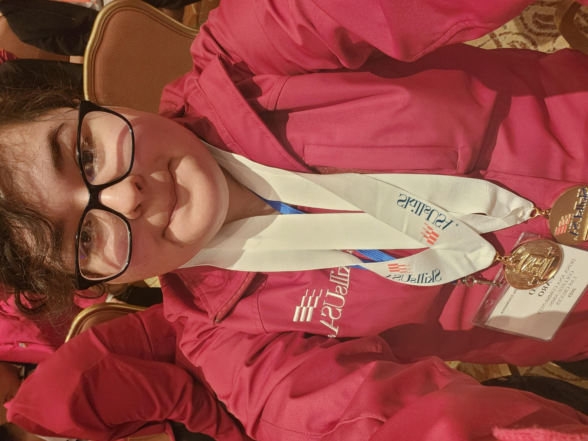
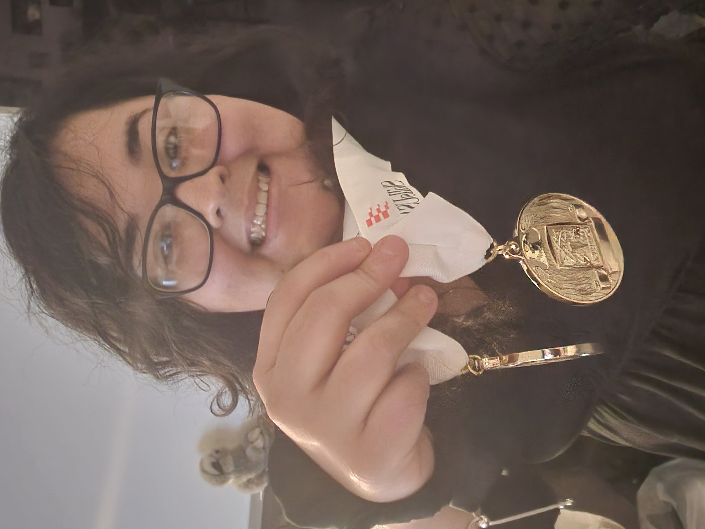
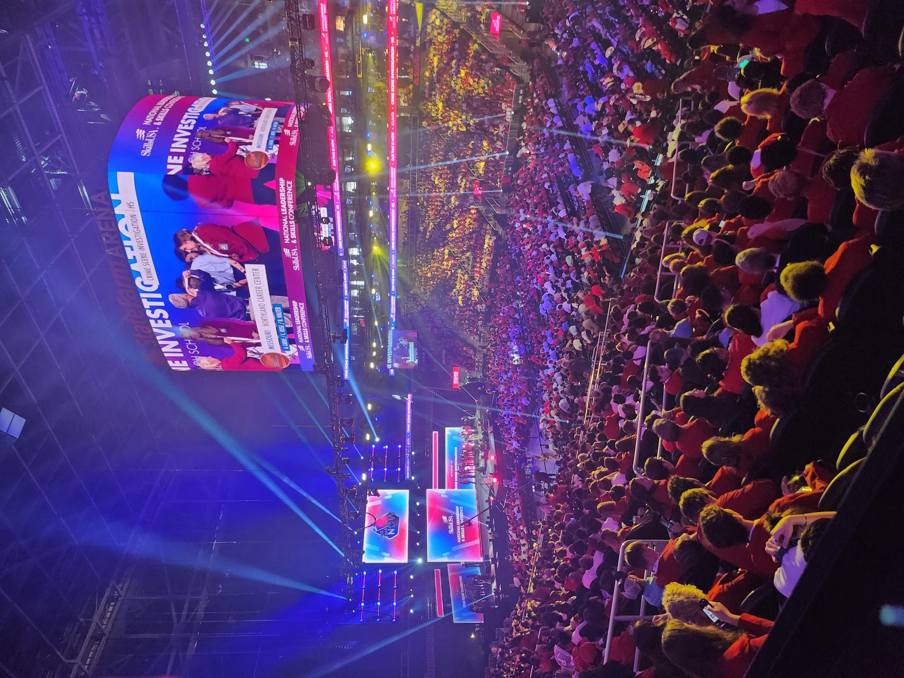
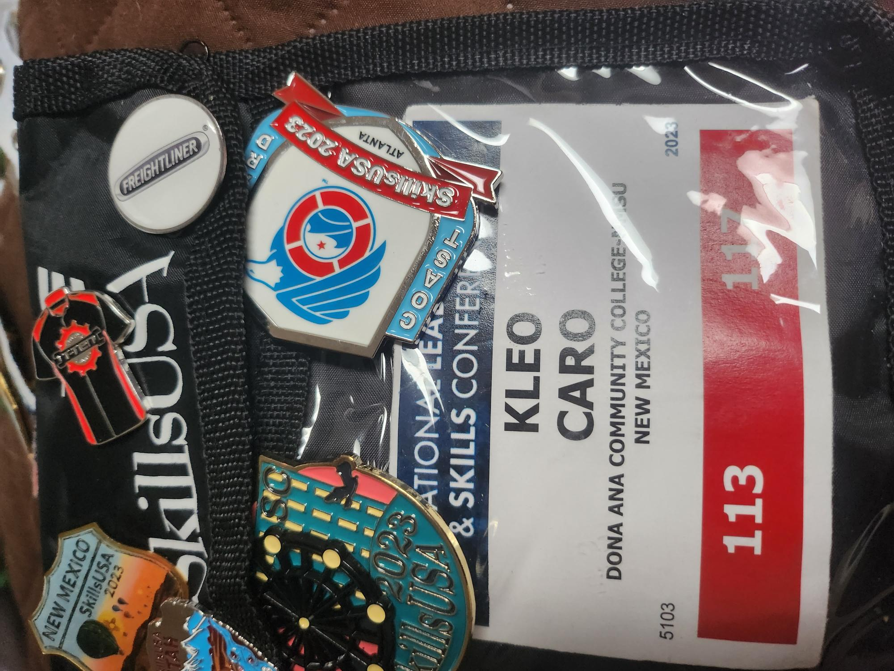
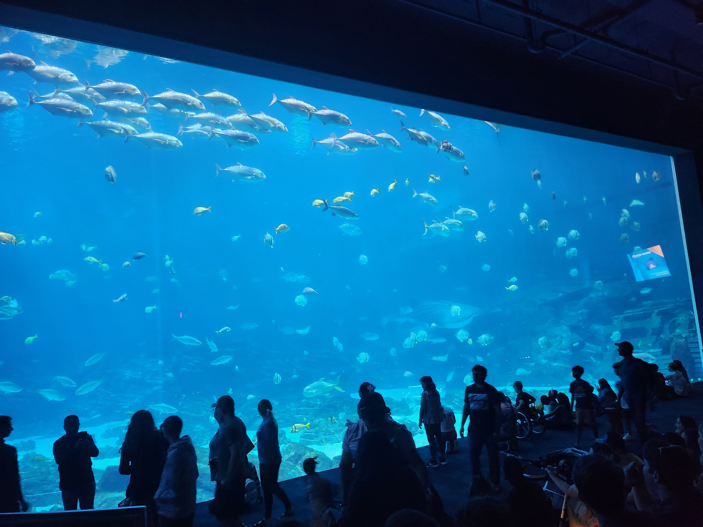
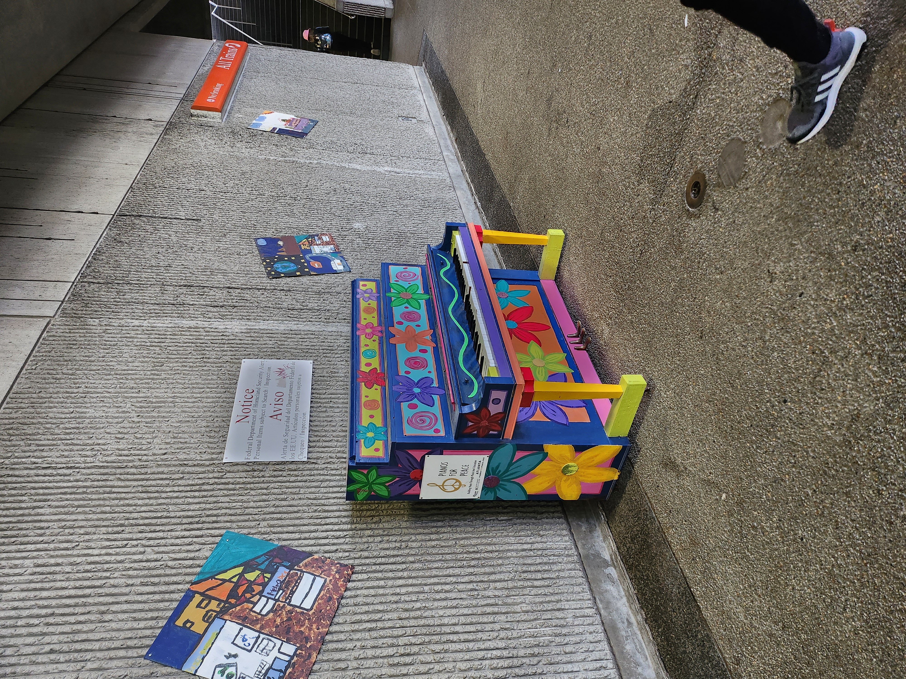
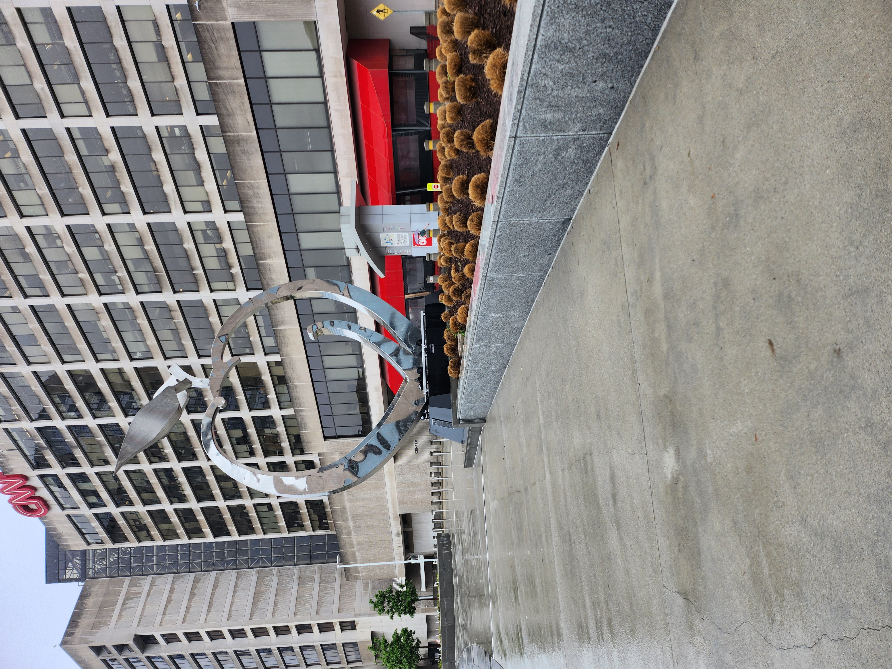
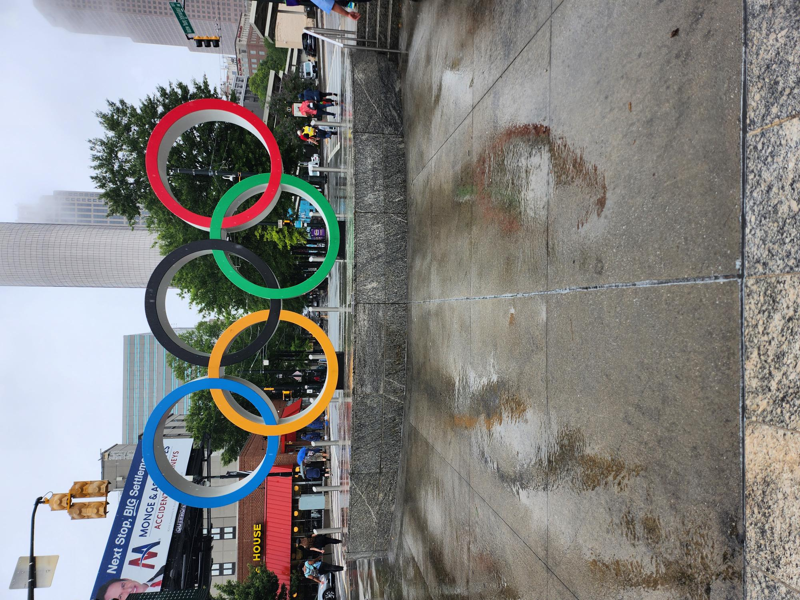

During my time at DACC, I joined a club organization named SkillsUSA to gain confidence and knowledge in the workforce. Through SkillsUSA, I participated in competitions that helped enhance my programming abilities. To qualify for nationals, you must win gold in your competition category at the state level. During the state competition, I earned two gold medals — one in Programming and one in Customer Service.


If you earn a gold medal in your competition category, you qualify to compete at nationals, which takes place out of state. I was only able to choose one category to compete in at nationals, so I chose Programming. I traveled to Georgia to represent New Mexico. Although I did not place, the experience was incredible. There was even a pin exchange where students from different states could meet and trade pins. It was a great opportunity to connect with other students on a national level.


Apart from the experience of programming competitively with other like‑minded and driven students, I also had the privilege of sightseeing in Georgia. I visited the largest aquarium in the United States, experienced my first revolving sushi spot, and explored the beautiful landscapes around the city.



